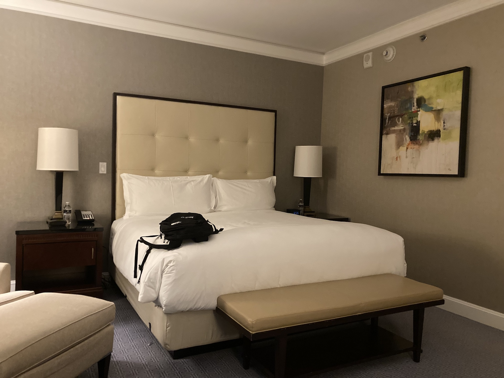

Welcoming Event Bain Dallas
Today was our welcoming event with the Dallas Office. I was super excited about it! I got to meet a lot of people. I made a special connection with someone in particular, a partner at the firm. We talked about many things, but we specially connected when I asked about his family. He has three daughters and one of them overcame leukemia. He is Christian and recognized God's hand in that process. It was an amazing conversation! This is a picture of the fancy hotel they reserved for us.
